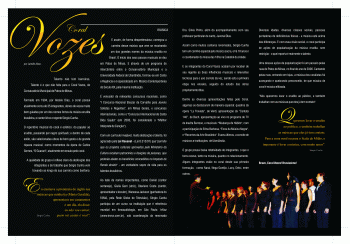
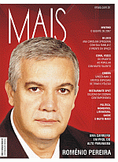

Talento não tem barreiras. Talento é o que não falta para o Coral Vozes, do Consevatório Municipal de Patos de Minas.
Formado em 1994, por Aloísio Dias, o coral possui atualmente cerca de 35 integrantes, donos de vozes muito bem guiadas por um dos nomes fortes da música erudita brasileira, o cantor lírico e regente Sérgio Cunha.
O repertório musical do coral é eclético: do popular ao erudito, passando por negro spirituals; e dentro de cada estilo, são selecionadas obras de bom gosto e de grande riqueza musical, como momentos da ópera de Carlos Gomes, "O Guarani", atualmente em ensaio pelo coral.
A qualidade do grupo é reflexo claro da dedicação dos integrantes e do trabalho que Sérgio Cunha vem travando ao longo de sua carreira como barítono.
E assim, de forma despretensiosa, começou a carreira desse músico que vem se mostrando um dos grandes nomes da música erudita no Brasil. O início dos seus passos musicais se deu em Patos de Minas. E através de um programa de intercâmbio entre o Conservatório Municipal e a Universidade Federal de Uberlândia, formou-se em Canto e Regência e é especializado em Música Contemporânea do Século XX, pela mesma instituição.
É vencedor de relevantes concursos nacionais, como
"I Concurso Nacional Eleazar de Carvalho para Jovens Solistas e Regentes", em Minas Gerais, e concursos internacionais, como o "Concurso Internacional de Canto Bidu Sayão" (em 2003, foi considerado o "Melhor Intérprete de Canção").
Com um currículo invejável, muita dedicação e talento, foi agraciado pela Lei Rouanet - (Lei 8.313/91) que "permite que os projetos culturais aprovados pelo Ministério da Cultura recebam patrocínios e doações de pessoas, que poderão abater os benefícios concedidos no Imposto de Renda devido" - um verdadeiro sopro de vida para os talentos brasileiros.
Ao lado de nomes importantes, como Daniel (cantor sertanejo), Giulia Gam (atriz), Otaviano Costa (cantor, apresentador e locutor), Wanessa Jackson (ganhadora do FAMA, pela Rede Globo de Televisão), Sérgio Cunha participa de um curso na instituição que é referência mundial em fonoaudiologia, em São Paulo: InVoz (www.invoz.com.br), sob coordenação da renomada Dra. Sílvia Pinho, além do acompanhamento com seu professor particular de canto, Juvenal Dias.
Assim como muitos cantores renomados, Sérgio Cunha tem um carinho especial pela música sacra, e há 18 anos é o coordenador da missa das 18hs na Catedral da cidade.
E os integrantes do Coral Vozes acabam por receber de seu regente as boas influências musicais e relevantes técnicas para o uso correto da voz, sendo esta a primeira etapa nos ensaios, seguido do estudo das obras propriamente ditas.
Dentre as diversas apresentações feitas pelo Coral, algumas se destacaram de maneira especial: quadros da ópera “La Traviata”, de Verdi, apresentação da “Cantata 140”, de Bach, apresentação ao vivo no programa de TV de Inezita Barroso, e musicais: "Mudança de Hábito", com a participação de Edna Barbosa, "Ecos da Música Negra", e "Recortes da Arte Brasileira". Esses últimos, a convite de músicos e instituições de Uberlândia.
O grupo possui baixa rotatividade de integrantes, o que o torna coeso, tanto na música, quanto no relacionamento. Alguns integrantes estão no coral desde sua primeira formação, como Naná, Nega Gontijo, Lucy, Delci, entre outros.
Diversas idades, diversas classes sociais, pessoas portadoras de deficiências físicas - a música está acima das diferenças. E com essa visão social, o coral participa de ações de popularização da música erudita, sem restrição - o que importa é realmente o talento.
Uma dessas ações de popularização foi um passeio pelas ruas de Patos de Minas, no final do ano de 2006. Cantando pelas ruas, entrando em lojas, a música dos coralistas foi avançando e quebrando preconceito, de que música de coral é música elitizada.
"Queremos levar o erudito ao público, e também trabalhar as músicas que eles já tem contato. Para a zona rural ou para o Scala de Milão, o importante é levar a música, com muito amor."
Bravo, Coral Vozes! Bravíssimo!